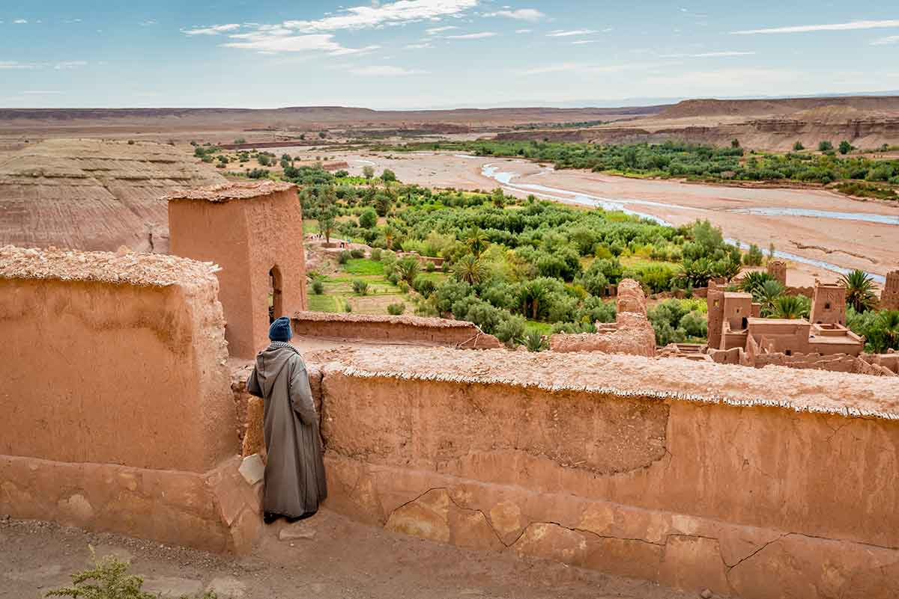
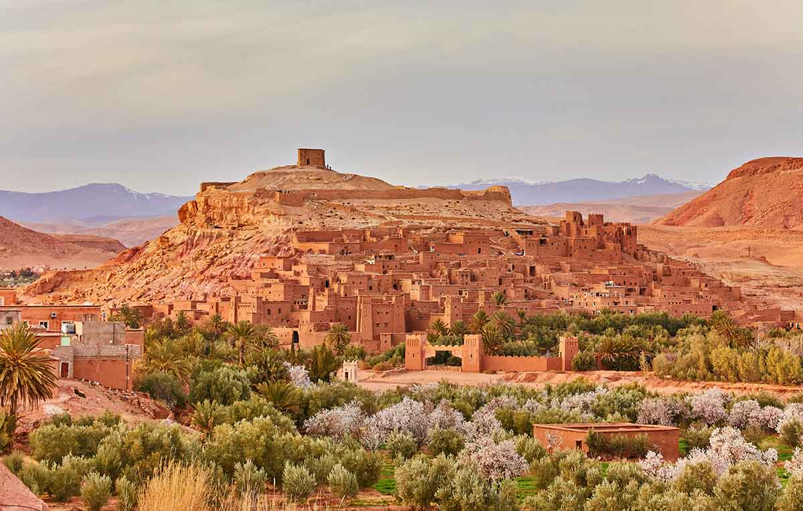
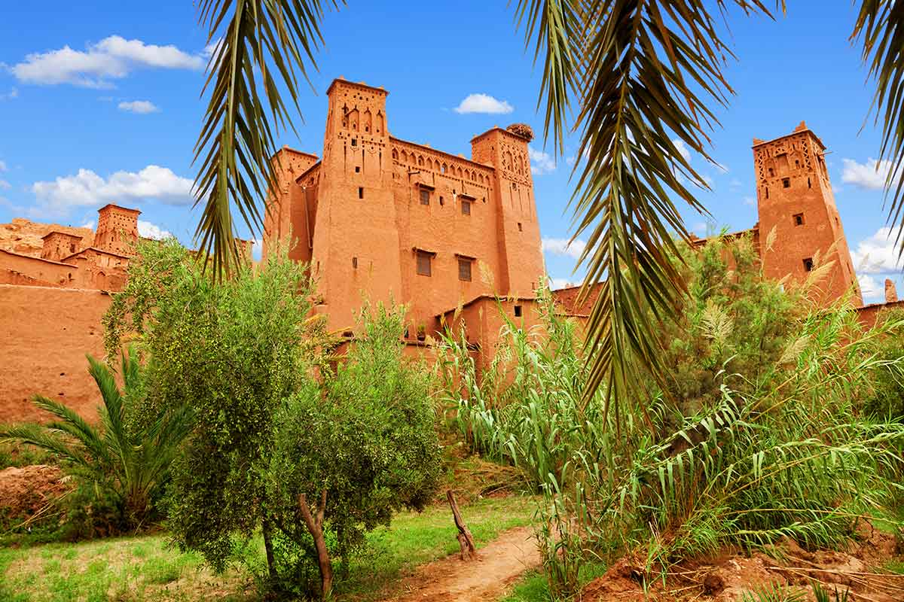
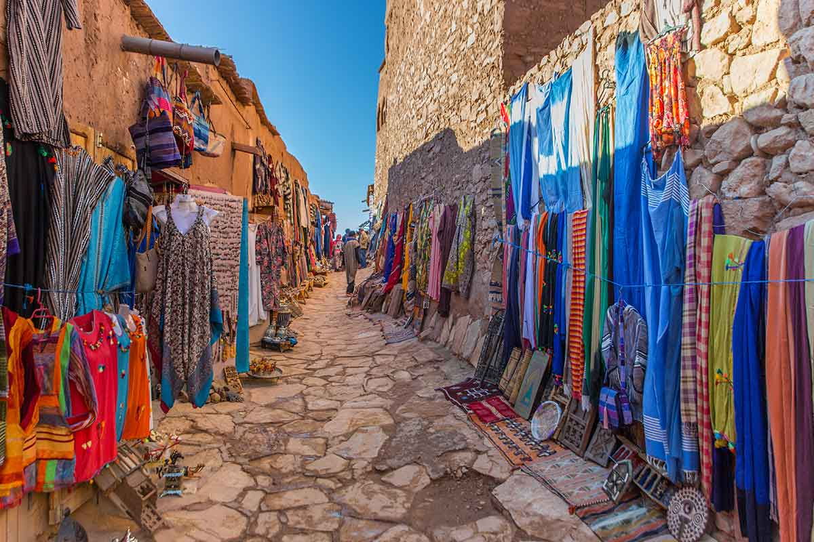
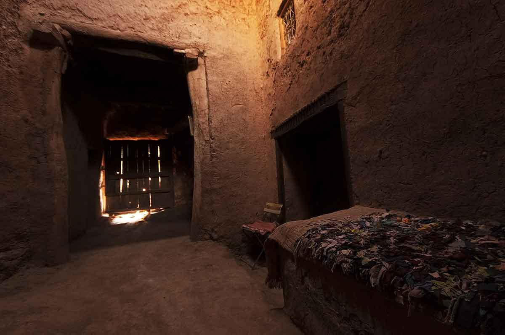
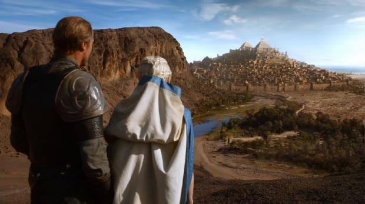
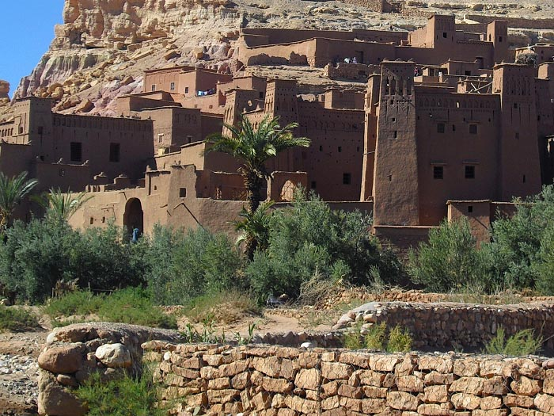
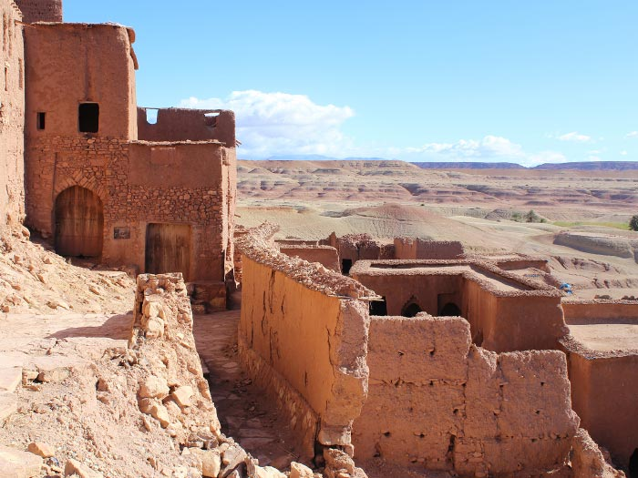

¿COMO ES AIT BEN HADDOU?
Ait Ben Haddou, o Ait Benhaddou, como algunos escriben, es una kasbah espectacular, a modo de poblado de arcilla y piedra con edificios rodeados por grandes murallas. La cercanía de la kasbah Ait Ben Haddou y Marrakech (unos 190 kilómetros de distancia) convierten a esta fortaleza en una excursión habitual por turistas procedentes de la ‘ciudad roja’. Por todo ello, se trata de uno de los lugares más bellos del país y un lugar de visita obligada para quienes tengan previsto conocer el desierto de Marruecos y el sur del país norteafricano.
La kasbah Ait Ben Haddou y el resto de fortalezas de este tipo son conjuntos arquitectónicos construidos de adobe y barro, coronados por torres que sirven de defensa, en lo que podría considerarse el equivalente a los castillos medievales. Estas kasbahs fueron antiguamente grandes pueblos bereberes en el desierto de Marruecos, amurallados y diseñados con el objetivo de defender las casas, las cosechas y los palmerales que crecen junto a sus cauces. Estos pueblos formaban grandes comunidades agrarias y mercantiles con una visión muy particular sobre el Islam.

Ait Ben Haddou es una de las kasbahs mejor conservadas de todo Marruecos y representa un ejemplo sobresaliente de las fortalezas en la zona de los valles del Draa, Todgha, Dades y Sous. En Ait Ben Haddou puede apreciarse cómo las construcciones están realizadas en una posición estratégica frente a una montaña, rodeada por torres angulares y una muralla defensiva. No se sabe con determinación la fecha de la que data esta construcción pero, convencidos de su importancia, las autoridades protegieron este lugar desde el año 1953.

la kasbah Ait Ben Haddou fue declarada Patrimonio de la Humanidad por la UNESCO. Y eso sin contar su gran demanda y reconocimiento en el campo cinematográfico para la realización de grandes películas como Lawrence de Arabia o Gladiator, iniciativa ampliamente aceptada por sus lugareños debido al importante extra que supone para la economía del pueblo y sus alrededores

LOS PAISAJES
Durante los días cálidos de verano es complicado ver a gente pasear por las calles de Ait Ben Haddou, que parecen perderse entre las sombras de las laberínticas callejuelas y pasadizos subterráneos. Sin embargo, en el actual pueblo por el que pasa la carretera, que está muy cerca de la kasbah, hay tiendas preparadas para el turismo con ofertas en cristales puros con mezclas de distintos minerales y numerosos fósiles que deberían cuidarse como joyas arqueológicas. Para su protección, el Estado aún no tiene presupuesto suficiente, y parece que nadie aún ha tomado cartas en el asunto.
En el pueblo también podrás encontrar artesanías marroquíes de todo tipo: vasijas de barro, herramientas de hierro, cintos de cuero, lana, vidrio artesanal y otros pequeños tesoros más.

Aunque el paisaje es árido y rocoso, el agua no escasea. La tierra es de poca vegetación, aunque abundan las palmeras datileras, las higueras, los naranjos y los limoneros, así como otros árboles frutales como el almendro o el manzano. En una visión amplia del paisaje podemos ver diferentes tonalidades de rojo, según la hora del día, con sus numerosas torres fortificadas que parecen adosadas a la montaña. Como hemos dicho antes, si se puede, es muy aconsejable hacer una visita al torreón de la antigua kasbah Ait Ben Haddou, donde encontrarás maravillosas vistas panorámicas de la región con el Alto Atlas como telón de fondo. Un espectáculo único e imperdible, que te llenará de la esencia atemporal de esta tierra indómita y del modo de vida arcaico y tenaz de su gente.
La villa se instaló en la cima de una colina para escapar de los vientos glaciares de las montañas y aprovechar mejor la luz del sol. Además, de esta manera estaban cerca de las rutas nómadas del desierto de Marruecos, tenían agua y podían defenderse de los potenciales enemigos.
Los muros exteriores cuentan con dos puertas para controlar las entradas y las salidas. La organización interna de la kasbah Ait Ben Haddou se dividió en dos partes diferenciadas: la pública y la privada. Esta organización le confiere a la kasbah una estructura particular. En los espacios públicos uno puede encontrar la plaza pública, la mezquita y la escuela coránica. La parte privada es un conglomerado de casas en las que se puede ver claramente la diferencia entre las casas normales del pueblo, construidas con una sola planta y sin apenas ornamentación, y las de las familias nobles, ricamente decoradas
Podéis realizar un recorrido por Ait Benhaddou vosotros solos o bien contratar un guía que os enseñe la kasbah y os explique su historia. Si vais a contratar un guía es recomendable que fijeis el precio antes de iniciar el recorrido. Podéis buscar estos guías preguntando en la recepción de alguno de los hoteles de la parte nueva

AIT BEN HADDOU Y EL CINE
Los amantes del cine seguro que sabéis que esta fortaleza ha quedado inmortalizada en multitud de películas, siendo uno de los lugares más cinematográficos de Marruecos. Su aspecto exótico y las condiciones climatológicas hacen de este ksar un lugar estupendo para el rodaje de películas. Esto ha sido muy bien aceptado por sus pobladores por suponer un incentivo para la economía del lugar, además de proporcionar trabajo de extras a los lugareños.
Aquí se han rodado escenas de una larga lista de películas desde los años sesenta, entre ellas: Lawrence de Arabia, Jesús de Nazaret, La última tentación de Cristo, La Momia, Gladiator, Alejandro Magno y más recientemente la serie Juego de Tronos. Como curiosidad comentar que una de las puertas monumentales del ksar no es original, pues fue construida en hormigón para que Michael Douglas se estrellara con la avioneta en La Joya del Nilo.

¿COMO LLEGAR?
Hay múltiples formas de llegar a Ait Ben Haddou, gracias la popularidad de este lugar. En caso de buscar algo organizado, partiendo desde Marrakech hay varias rutas organizadas, desde las que van específicamente hasta las que visitan lugares como Ouarzazate o incluso más alejados como Zagora o Merzouga, y que inevitablemente terminan pasando por este ksar.

En caso de optar por un taxi no deberíamos pagar más de 200 dírhams (taxi completo y trayecto) si partimos de Ouarzazate y 600 en el caso de Marrakech. En cualquier caso, dinero más que bien invertido para contemplar uno de los paisajes más icónicos e impactantes de todo Marruecos.

 ¡SaharaToursGo!
¡SaharaToursGo!